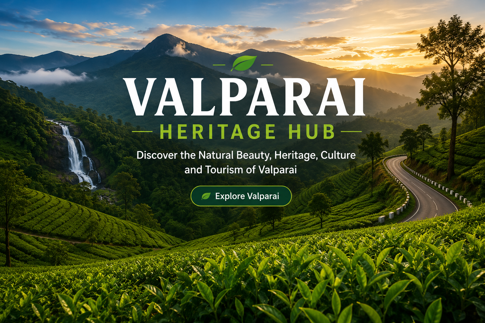

Explore the breathtaking tea estates, waterfalls, wildlife, tribal heritage, temples and hidden natural treasures of Valparai through one complete digital heritage platform.
Discover the rich history and heritage of Valparai.
Explore the lush green tea plantations and scenic landscapes.
Visit famous viewpoints, waterfalls and tourist attractions.
Experience the rich biodiversity and wildlife of Valparai.
Explore the spiritual and cultural heritage of Valparai temples.
Learn about the traditions and lifestyle of indigenous communities.
Browse beautiful photos of nature, wildlife and tea estates.
Find travel routes, tips and complete visitor information.
Valparai is a beautiful hill station located in the Anamalai Hills of Tamil Nadu. It is famous for its lush green tea estates, breathtaking landscapes, rich biodiversity, wildlife sanctuaries, waterfalls, temples, tribal heritage and pleasant climate.
Valparai Heritage Hub is a dedicated knowledge platform that brings together the history, culture, tourism, tea plantations, wildlife, travel information and heritage of Valparai in one place.
Read MoreExperience the endless green tea plantations and scenic mountain landscapes.
Spot elephants, lion-tailed macaques, gaurs, hornbills and many other wildlife species.
Enjoy the beauty of Nallamudi Poonjolai, Monkey Falls and other natural attractions.
Discover temples, tribal traditions, history and the unique culture of Valparai.
Enjoy breathtaking mountain views, misty valleys and peaceful surroundings.
Learn about tea cultivation, processing and the history of Valparai's tea estates.
Capture stunning landscapes, wildlife and unforgettable sunrise viewpoints.
Get useful travel guides, route information and the best time to visit Valparai.
Explore the beautiful landscapes, tea estates, wildlife and waterfalls of Valparai.

Tea Estates
Feet Elevation
Wildlife Species
Tourist Attractions
One of the best panoramic viewpoints in Valparai.
A beautiful natural waterfall located on the Pollachi–Valparai Road.
One of Asia's deep reservoirs surrounded by scenic hills.
Explore breathtaking tea estates, waterfalls, wildlife, temples, viewpoints and the rich heritage of Valparai with the complete Valparai Heritage Hub guide.
Start Exploring